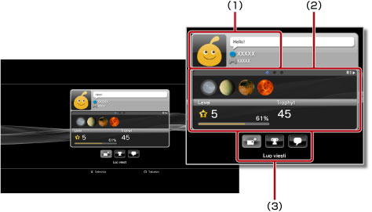
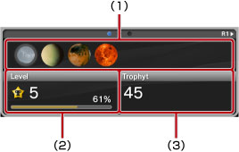

Ystävät > Ystäväluettelo > Profiilien tarkasteleminen
Profiilien tarkasteleminen
Tämän toiminnon käyttäminen saattaa edellyttää, että käyttöjärjestelmä päivitetään.
Voit tarkastella omaa tai ystäväsi profiilia. Voit tarkastella ystäväsi profiilia valitsemalla hänen avatarinsa.

(1) |
Tilanäyttö |
|---|---|
(2) |
Info |
(3) |
Ohjauspaneeli |
Vihje
Lisätietoja tilanäytöistä on tämän oppaan kohdassa  (Ystävät) > [Ystäväluettelo] > [Tilan tarkastaminen].
(Ystävät) > [Ystäväluettelo] > [Tilan tarkastaminen].
Profiilinäytön tietojen tarkasteleminen
Voit tarkastella profiilin tietoja, kuten trophy-menestystä, kullakin arvoasteella ansaittujen trophyjen määriä sekä ystävien yksityiskohtaisia tietoja. Voit selata tietoja painamalla L1- tai R1-näppäimiä.

(1) |
Äskettäin ansaitut trophyt |
|---|---|
(2) |
Nykyinen taso ja edistyminen seuraavaa tasoa kohden |
(3) |
Ansaittujen trophyjen kokonaismäärä |
Ohjauspaneelin käyttäminen [Profiili]-kohdassa
Ohjauspaneelin avulla voit suorittaa monenlaisia tehtäviä, kun tarkastelet profiilia. Ohjauspaneelissa näkyvät kuvakkeet vaihtelevat ystävän tilan mukaan.
 |
Valikko (pelin nimi) | Tarkastele luetteloa toiminnoista, jotka ovat käytettävissä parhaillaan pelattavassa pelissä. |
|---|---|---|
 |
Lisää ystävä | Lähetä jollekulle ystävänlisäyspyyntö. |
 |
Viestilista | Näytä ystävän kanssa vaihtamiesi viestien luettelo. |
 |
Luo viesti | Luo uusi viesti. |
 |
Vertaa trophyjä | Vertaa saavuttamaasi trophy-menestystä ystäväsi tilanteeseen. |
 |
Aloita uusi chat | Aloita chat. |
 |
Vastaa ystävänlisäyspyyntöön | Avaa ystävänlisäyspyyntö ja lähetä siihen vastaus. |
| Lisää estolistalle | Lisää ystävä estolistalle. | |
 |
Poista estolistalta | Poista ystävä estolistalta. |
Vihjeitä
- Ohjauspaneelia ei voi piilottaa.
- Ohjauspaneeli ei ole näkyvissä, kun tarkastelet omaa profiiliasi.
Profiilinäytön taustavärin muuttaminen
Valitse profiilinäytön yläreunan vasemmanpuoleinen välilehti ja tuo värivalikoima näkyviin painamalla  -näppäintä. Valitse profiilinäytön taustaväri värivalikoimasta.
-näppäintä. Valitse profiilinäytön taustaväri värivalikoimasta.

Vihje
Et voi muuttaa muiden käyttäjien profiilinäyttöjen taustavärejä.
Ansaittujen trophyjen määrän vertaileminen
1. |
Valitse |
|---|---|
2. |
Valitse
|
3. |
Valitse peli.
|